the Italian Gathering: 1997 | 1998
the Italian Gathering: 1997 | 1998
the Italian Gathering: 1997 | 1998
Come arrivare al TiG'97Arrivare a piediArrivare al party-place del TiG'97 e' molto semplice dato che dista solamente 700m dalla stazione centrale. Appena usciti dalla stazione vi troverete davanti ad un immenso spiazzale che vi separa dal centro della citta'. Noterete anche un bel po' di bandiere che rappresentano il logo delle Ferrovie dello Stato, nonche' una schiera di taxi! Dovete girare a sinistra e prendere la prima strada sulla sinistra. Percorretela tutta (e' una specie di galleria che passa sotto il primo piano della stazione). Alla fine vi troverete ad un incrocio. La strada che avrete di fronte e' "Via Aremogna". Il vostro percorso e' indicato dalla freccia verde sulla mappa. Una volta imboccata "Via Aremogna" proseguite dritti. Potrete notare un ristorante sulla vostra sinistra (si chiama "Trattoria Fernando"). E' proprio prima dell'incrocio. All'incrocio continuate per il prosieguo di "Via Aremogna". Questa via si chiama "Via Passolanciano". Percorretela tutta finche' non arrivate ad un nuovo incrocio. Da qui potete vedere un'edicola ed un distributore della benzina sulla vostra destra. Girate a destra e vi ritroverete su "Via Rigopiano". Questa e' la via dove e' situato il party-place. Camminate finche' non vedrete il palazzetto dello sport sulla vostra destra. La freccia verde mostra il vostro percorso. Arrivare con il busSe trasportate un sacco di roba potrebbe convenirvi prendere l'autobus. Appena usciti dalla stazione, il capolinea dei bus e' proprio di fronte a voi nel grosso spiazzale antistante la stazione. Dovete prendere il bus numero 9. Vi lascera' di fronte al party-place.Il Party Place |
 |
|
These pages are best viewed with Netscape Navigator at 800x600 Graphics, page design, layout and implementation by Cerin0 and Xenon Send your comments, suggestions and criticisms to mancinel@univaq.it or to cerin0@hotmail.com |